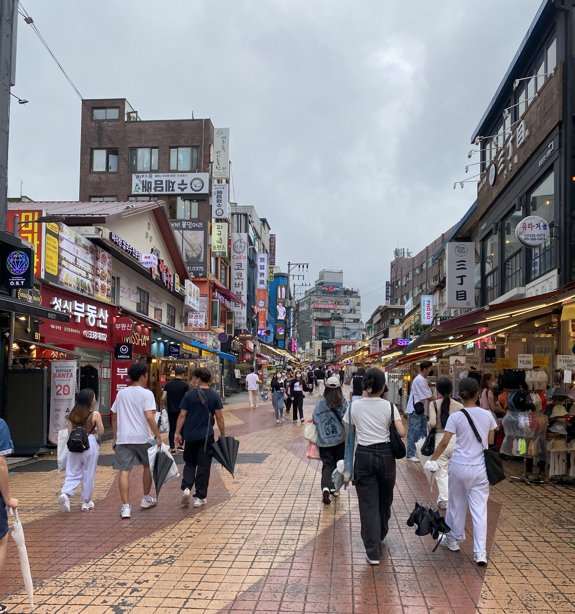
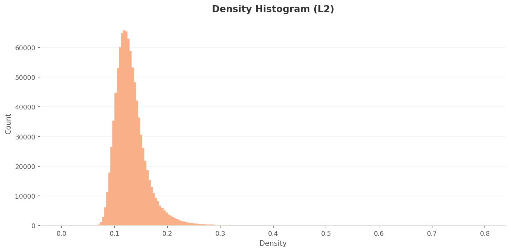
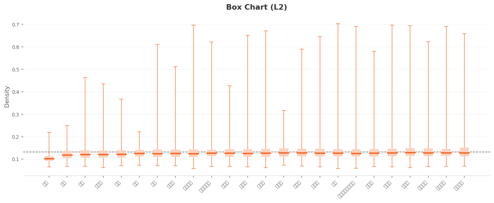
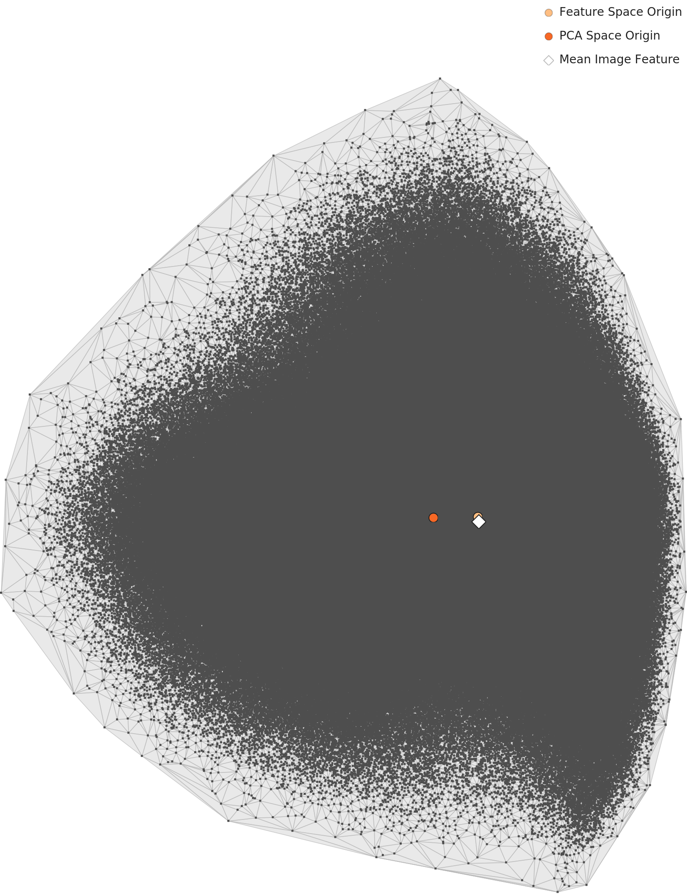
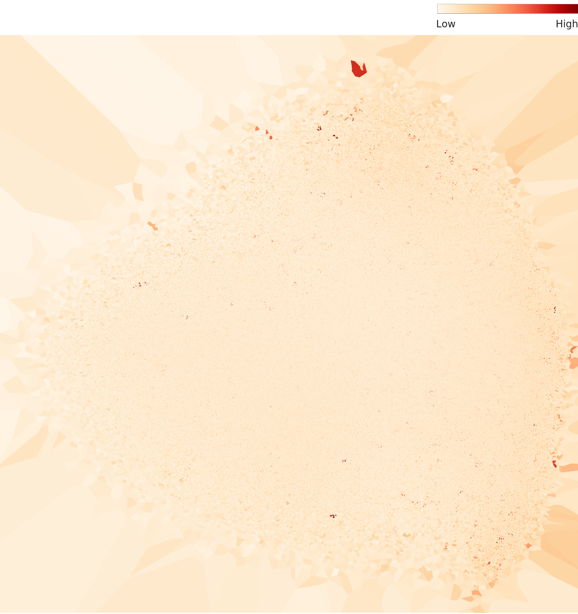
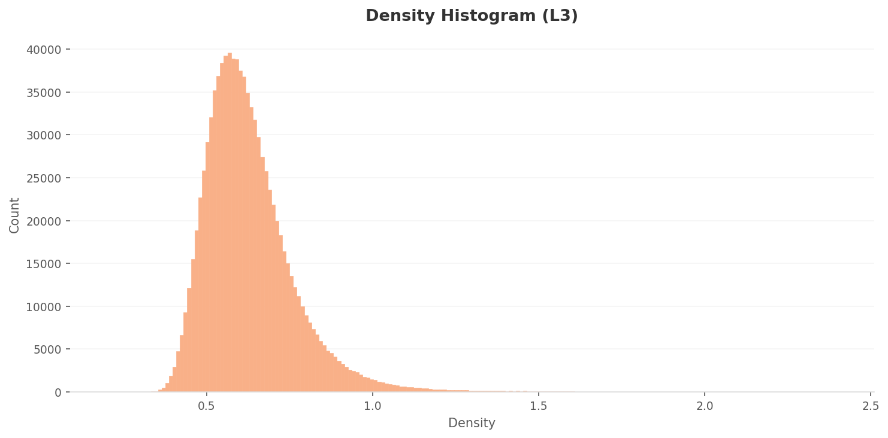
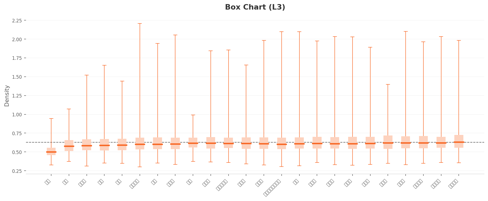
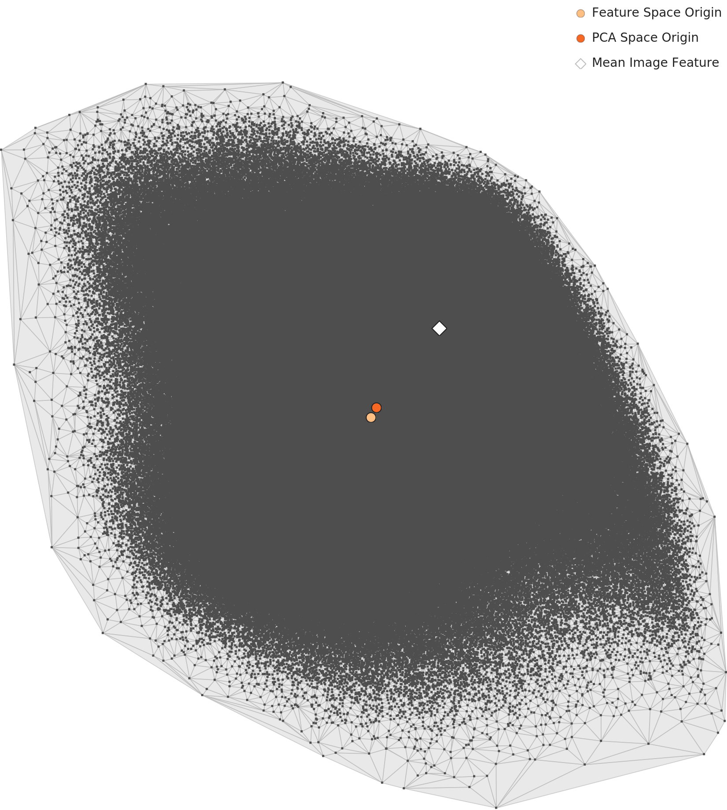
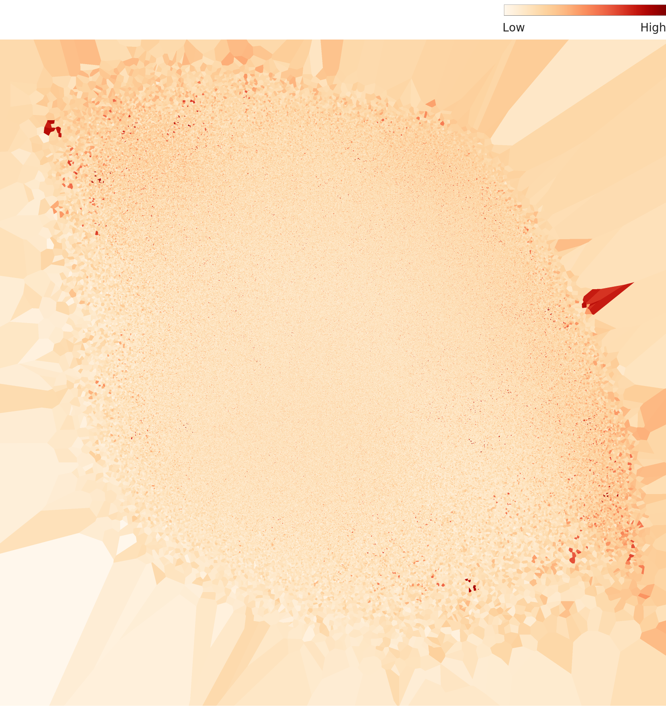

Executive Summary
이 글은 DataClinic 리포트 #127을 바탕으로 작성됐습니다. 진단 대상은 AI Hub의 K-Fashion 이미지 데이터셋입니다. 스트리트·모던·로맨틱·페미닌부터 펑크·힙합까지 24개 스타일로 라벨링된 967,806장의 한국 패션 사진을 DataClinic의 세 단계 렌즈로 들여다봤습니다.
데이터셋의 공식 성능표는 우수합니다. AI Hub가 공개한 스타일 분류 벤치마크는 Recall@3 91.11%. 숫자만 보면 "잘 되는 데이터"입니다. 그런데 DataClinic으로 분포를 펼쳐 보면 정확도가 가린 세 가지가 드러납니다. 스트리트 한 클래스가 전체의 46.5%를 차지하는 극단적 불균형, 한 촬영 세션에서 쏟아진 거의 같은 사진들(near-duplicate), 그리고 사람조차 합의하기 어려운 스타일 경계의 모호성입니다.
가장 선명한 증거는 클래스 구별 렌즈(L3)가 뽑은 '가장 전형적인 스트리트' 1·2위였습니다. 두 이미지를 열어 보니 화이트 스튜디오 배경에 꽃무늬 쉬폰 블라우스와 스키니진을 입은, 누가 봐도 로맨틱한 코디였습니다. 정작 도시 창가에서 찍힌 오버사이즈 그래픽 맨투맨은 '비전형'으로 밀려나 있었습니다. AI가 배운 '스트리트의 전형'은 옷이 아니라 촬영 포맷이었던 셈입니다. 이 글은 그 역설을 실제 이미지로 따라갑니다.
데이터셋 소개 — 97만 장의 한국 패션
K-Fashion 이미지는 2020년 OpinionLive가 이화여대·한국패션산업연구원·AI.M·Wearly와 함께 구축해 AI Hub에 공개한 한국형 패션 데이터셋입니다. 원본은 약 120만 장 규모이며, 스타일 라벨과 함께 패션 아이템의 폴리곤·바운딩박스, 속성 정보까지 주석돼 있습니다. 조회 66,321회, 다운로드 4,059회로 국내 패션 AI 연구에서 활발히 쓰이는 대표 자산입니다.
이번 진단에는 학습용(train) 967,806장이 사용됐습니다. 아래는 데이터셋 전체의 분위기를 한눈에 보여주는 콜라주입니다. 텍스트로 옮기자면, 대부분 밝은 실내에서 전신을 직립으로 촬영한 룩북 형식의 사진입니다. 이 일관된 촬영 포맷이 뒤에서 살펴볼 분석의 중요한 복선이 됩니다.

▲ K-Fashion 이미지 콜라주. 24개 스타일, 967,806장. 대부분 밝은 실내 전신 룩북 컷으로 촬영 포맷이 상당히 균질합니다.
겉보기에는 풍성한 데이터셋입니다. 문제는 24개 스타일에 사진이 고르게 나뉘어 있지 않다는 점입니다. 스트리트 한 클래스가 449,494장(46.5%)으로 전체의 절반에 가깝고, 2위 페미닌(88,325장)의 다섯 배가 넘습니다. 반대편 끝에는 펑크 382장, 힙합 1,240장, 웨스턴 1,712장처럼 천 장 안팎의 소수 클래스가 있습니다. 클래스당 평균은 40,325장이지만 표준편차가 91,811장으로 평균보다 큽니다. 분포가 평균을 중심으로 모이는 게 아니라 극단으로 갈라진 롱테일이라는 뜻입니다.
▲ 24개 중 일부 클래스의 이미지 수(막대는 스트리트 449,494장 기준 상대 길이). 스트리트는 펑크의 약 1,177배입니다.
스타일 분류 AI가 배워야 할 '스트리트'는 스튜디오 흰 벽이 아닌 이런 도시 공간에서 살아 숨 쉽니다. 아래는 서울 홍대 거리의 실제 풍경입니다.

L1 — 데이터 위생은 합격, 다양성은 질문으로
Level 1은 픽셀 수준의 기초 체력 검사입니다. 결과부터 말하면 위생 항목은 무난합니다. 이미지 채널은 모두 RGB로 통일돼 있고, 결측치도 발견되지 않았습니다. 라벨 정합성에도 특이사항이 없습니다. 한 가지 눈에 띄는 점은 해상도 편차입니다. 가장 작은 이미지가 280×385px, 가장 큰 이미지가 4160×3872px로, 같은 데이터셋 안에서 크기 차이가 큽니다. 학습 전 리사이즈 정책을 분명히 잡아야 하는 대목입니다.
흥미로운 건 '평균 이미지'입니다. 아래는 전체 967,806장을 픽셀 단위로 평균한 이미지입니다. 형체가 거의 보이지 않는 흐릿한 인물 실루엣만 남습니다. 평균이 흐릴수록 그 안의 사진들이 서로 다르다는 뜻이니, 데이터셋 전체의 시각적 다양성이 크다는 신호로 읽을 수 있습니다.

▲ 전체 평균 이미지. 흐릿한 전신 실루엣만 남는다는 건 그만큼 사진들이 제각각이라는 의미입니다. 단, 모두 '전신 직립' 구도라는 공통점은 남아 있습니다.
클래스별로도 평균 이미지를 만들 수 있습니다. DataClinic이 제공하는 6개 클래스(기타·모던·섹시·키치·펑크·히피)에 대해, 각 클래스의 실제 대표 샘플(왼쪽)과 해당 클래스 평균 이미지(오른쪽)를 나란히 놓았습니다. 평균 이미지가 또렷할수록 그 클래스의 구도와 자세가 일관됩니다.
 실제
실제
 평균
평균
 실제
실제
 평균
평균
 실제
실제
 평균
평균
 실제
실제
 평균
평균
 실제
실제
 평균
평균
 실제
실제
 평균
평균
▲ 각 카드 왼쪽은 클래스 대표 샘플(실제), 오른쪽은 클래스 평균 이미지. 여섯 평균 이미지가 모두 '전신 직립' 실루엣으로 닮아 있다는 점에 주목하세요. 스타일은 달라도 촬영 포맷은 같습니다.
L2 — 범용 렌즈로 본 24개 스타일의 분포
Level 2는 Wolfram ImageIdentify Net V2라는 범용 신경망(관찰 차원 1,280)으로 모든 이미지를 한 번씩 바라봅니다. 패션에 특화되지 않은 일반 인식 모델이라, "이 데이터셋이 일반적인 시각 특징의 눈으로 보면 어떻게 흩어지는가"를 보여줍니다. 여기서 핵심 지표가 밀도(density)입니다. 밀도가 높은 이미지는 비슷한 이미지에 둘러싸인 '전형적' 이미지이고, 낮은 이미지는 주변에 닮은 사진이 드문 '외딴' 이미지입니다.
먼저 전체 밀도 분포입니다. 대부분의 이미지가 0.1 부근에 좁게 몰려 있고, 오른쪽으로 얇은 꼬리가 0.3 근처까지 이어집니다. 한 덩어리로 모여 있되 소수의 전형적 이미지가 높은 밀도를 가져가는 형태입니다.

▲ L2 밀도 히스토그램. 약 0.12에서 정점을 찍고 0.3 근처까지 완만히 감소합니다. 절대 다수가 좁은 구간에 몰려 있습니다.
클래스별로 나눠 보면 차이가 보입니다. 아래 박스 차트에서 가장 왼쪽 클래스의 박스가 다른 클래스보다 낮고 짧습니다. 이 클래스가 바로 '기타'입니다. 정해진 스타일에 들어가지 않는 사진을 모은 캐치올(catch-all) 범주이다 보니, 서로 닮은 이미지가 적어 밀도가 가장 낮게 형성됩니다. 나머지 클래스들은 중앙값이 0.12~0.13으로 비슷하지만, 위쪽 수염이 0.6~0.7까지 길게 뻗습니다. 클래스 안에 매우 전형적인 사진 무리가 따로 존재한다는 뜻입니다.

▲ L2 클래스별 밀도 박스 차트. 맨 왼쪽 '기타'가 가장 낮은 응집을 보이고, 다른 클래스들은 위쪽 수염이 0.7까지 길게 뻗어 전형적 사진 무리의 존재를 드러냅니다.
이 분포를 평면에 펼친 것이 아래 PCA 지도입니다. 96만 개의 점이 비대칭적인 삼각형에 가깝게 퍼져 있습니다. 회색 다이아몬드(전체 평균 특징)가 한가운데가 아니라 한쪽으로 치우쳐 있는데, 물량이 압도적인 스트리트가 분포의 무게중심을 자기 쪽으로 끌어당긴 결과로 볼 수 있습니다.

▲ L2 PCA 산점도. 비대칭 삼각형 윤곽. 평균 특징(다이아몬드)이 원점(주황 점)에서 한쪽으로 벗어나 있어, 다수 클래스 쪽으로 분포가 쏠려 있음을 시사합니다.
같은 데이터를 밀도 히트맵으로 보면, 안쪽이 비교적 옅고 위쪽 가장자리에 진한 핫스팟이 하나 솟아 있습니다. K-패션이 단일한 중심으로 모이는 게 아니라, 가장자리에 전형적인 군집을 따로 만든다는 신호입니다.

▲ L2 밀도 히트맵. 위쪽 가장자리에 고밀도 핫스팟이 솟아 있습니다. 전형적 이미지가 분포의 한쪽에 집중됩니다.
클래스별 밀도 곡선과 대표 이미지를 함께 보면 더 구체적입니다. 모던은 가장 높은 밀도(최고밀도 샘플 약 0.70)를 기록해 룩북형 사진이 촘촘히 모여 있고, 히피와 키치도 비교적 또렷한 봉우리를 만듭니다. 반면 기타는 봉우리가 낮고 넓게 퍼져 응집이 약합니다.
 밀도
실제
밀도
실제
 밀도
실제
밀도
실제
 밀도
실제
밀도
실제
 밀도
실제
밀도
실제
▲ L2 클래스별 밀도 곡선(왼쪽)과 대표 이미지(오른쪽). 모던이 가장 응집되고, 기타가 가장 흩어집니다. 밀도 수치는 해당 클래스의 최고밀도 샘플 기준입니다.
L3 — 클래스 구별 렌즈로 다시 보다
Level 3은 같은 ImageIdentify Net V2를 베이스로 하되, 클래스 구별력을 유지하도록 150차원으로 최적화한 렌즈를 적용합니다. 범용 렌즈가 놓친 클래스 간 차이를 더 또렷하게 잡아내는 단계입니다. 다만 한 가지 주의가 필요합니다. L3의 밀도 값은 L2와 다른 차원 공간에서 계산되므로 두 단계의 숫자를 직접 비교하면 안 됩니다. 비교할 수 있는 건 분포의 '모양'뿐입니다.
L3 밀도 히스토그램은 약 0.55에서 정점을 이루고, 오른쪽 꼬리가 L2보다 훨씬 멀리(1.5 너머까지) 뻗습니다. 동적 범위가 넓어졌다는 뜻이고, 일부 초전형 이미지가 극단적으로 높은 밀도를 가져갑니다.

▲ L3 밀도 히스토그램. 정점은 약 0.55, 오른쪽 꼬리가 L2보다 길게 늘어납니다(소수의 초전형 이미지가 매우 높은 밀도를 획득). L2와 절대값 비교는 불가합니다.
박스 차트에서도 클래스 중앙값이 0.50~0.65로 L2보다 균일해집니다. 여기서도 맨 왼쪽 기타가 가장 낮습니다. 여러 클래스의 위쪽 수염이 2.0을 넘어, 클래스마다 극단적으로 전형적인 사진이 존재함을 보여줍니다.

▲ L3 클래스별 밀도 박스 차트. 중앙값이 0.5~0.65로 비교적 고르고, 여전히 기타가 최저입니다. 위쪽 수염이 2.0을 넘는 클래스가 다수입니다.
가장 눈에 띄는 변화는 PCA 지도의 모양입니다. L2의 비대칭 삼각형이 L3에서는 대칭에 가까운 타원으로 정돈됩니다. 150차원 최적화가 스트리트 물량이 만들던 방향 쏠림을 어느 정도 교정했다고 읽을 수 있습니다. 두 지도를 나란히 보면 차이가 분명합니다.
L2 — 비대칭 삼각형
평균 특징이 한쪽으로 치우침. 다수 클래스 쏠림.

L3 — 대칭 타원
방향 쏠림이 완화돼 더 균형 잡힌 윤곽.
▲ L2(왼쪽) vs L3(오른쪽) PCA 비교. 클래스 구별 렌즈가 분포의 방향 편향을 일부 교정합니다.
L3 밀도 히트맵은 L2와 또 다릅니다. 가운데가 비고 가장자리(특히 왼쪽과 오른쪽)에 진한 핫스팟 두 개가 솟은 도넛형입니다. K-패션이 하나의 중심이 아니라 여러 개의 원형(아키타입) 군집으로 존재한다는 시각적 증거입니다.

▲ L3 밀도 히트맵. 도넛형 구조에 좌·우 가장자리 핫스팟 두 개. 데이터가 단일 중심이 아니라 여러 군집으로 나뉜다는 신호입니다.
L3에서는 L2에서 두드러지지 않던 소수 클래스가 또렷해집니다. 스포티(14,701장)는 분포가 가장 뜨겁게 솟고, 힙합(1,240장)도 별도 군집으로 분리되기 시작합니다. 섹시는 최고밀도 샘플이 약 1.44까지 올라 강한 전형성을 보입니다. 사진 수가 적은 클래스라도 시각적 일관성이 높으면 클래스 구별 렌즈에서 또렷한 봉우리를 만든다는 점을 보여줍니다.
 밀도
밀도
 실제
실제
 밀도
밀도
 실제
실제
 밀도
실제
밀도
실제
 밀도
실제
밀도
실제
▲ L3 클래스별 밀도 곡선(왼쪽)과 대표 이미지(오른쪽). 사진 수가 적어도 시각적 일관성이 높으면(스포티·섹시) 또렷한 봉우리를 만듭니다.
가장 스트리트다운 옷의 정체
여기서부터가 이 진단의 심장입니다. L3 클래스 구별 공간에서 전체 96만 장 중 '가장 전형적인'(최고밀도) 이미지 1·2위를 스트리트 클래스가 독차지했습니다. 밀도 2.21과 2.15. 1·2위만의 이야기가 아닙니다. 최고밀도 상위 10장 중 9장이 스트리트였고, 밀도는 2.09부터 2.21까지 좁은 구간에 몰려 있었습니다. 압도적인 물량을 가진 클래스가 가장 전형적인 자리를 차지하는 건 자연스러워 보입니다. 그런데 그 상위 이미지들을 실제로 열어 보면 이야기가 달라집니다.
1위 이미지는 화이트 스튜디오 배경에 꽃무늬 쉬폰 블라우스와 블루 스키니진, 빨간 플랫슈즈 차림의 전신 컷입니다. 시각적으로는 누가 봐도 로맨틱하거나 페미닌한 코디입니다. 게다가 1위와 2위는 같은 촬영 세션에서 구도만 미세하게 다르게 찍은 연속 컷입니다. 거의 같은 사진 두 장이 '가장 전형적인 스트리트'의 1·2위를 나눠 가진 셈입니다.

최고밀도 #1 (밀도 2.21)
라벨: 스트리트. 화이트 스튜디오, 꽃무늬 블라우스 + 스키니진 + 빨간 플랫.

최고밀도 #2 (밀도 2.15)
라벨: 스트리트. 1위와 같은 세션의 연속 컷(구도만 미세하게 다름).
▲ L3가 뽑은 '가장 전형적인 스트리트' 1·2위. 같은 촬영 세션의 near-duplicate 두 장이 최상위를 차지했습니다.
이런 일이 생기는 이유는 배치 촬영에 있습니다. 룩북 촬영은 한 모델이 한 옷을 입고 같은 세트에서 수십 장을 연속으로 찍습니다. 그 결과 거의 동일한 사진(near-duplicate)이 한 클래스에 대량으로 쌓입니다. 비슷한 사진이 많을수록 그 주변의 밀도가 올라가고, 밀도가 높을수록 모델은 그 패턴을 '전형'으로 학습합니다. 49만 장이라는 물량과 배치 촬영이 만나면, 모델이 배우는 건 스타일이 아니라 "스튜디오 + 전신 직립 + 밝은 상의 + 데님"이라는 촬영 포맷이 됩니다.
반대편을 보면 메시지가 또렷해집니다. 같은 스트리트 클래스의 최저밀도 이미지(밀도 0.30)는 검정 오버사이즈 그래픽 맨투맨을 입고 도시 창가에 걸터앉은 컷입니다. 창밖으로 실제 건물과 공장 단지가 보입니다. 누가 봐도 진짜 거리 감성입니다. 그런데 이 사진은 '비전형'으로 분류돼 분포의 변두리로 밀려나 있습니다.
정리하면, AI가 학습한 '스트리트의 전형'은 옷의 스타일이 아니라 촬영 포맷이었습니다. 그래픽·오버사이즈·도시 배경처럼 우리가 흔히 떠올리는 거리 감성은 오히려 비전형으로 취급됐습니다. 라벨이 '스트리트'로 정확히 붙어 있어도, 밀도가 가리키는 전형은 전혀 다른 곳을 향한 것입니다.
실전 임팩트 — 이 데이터로 패션 AI를 학습하면
데이터 품질 진단은 숫자로 끝나지 않습니다. 이 데이터로 훈련된 AI가 실제 서비스에서 어떤 결과를 낼 수 있는지가 진짜 질문입니다. 아래는 같은 '스트리트' 라벨을 가진 두 이미지가 검색·추천 AI에서 어떻게 갈릴 수 있는지를 정리한 시나리오입니다.
⚠️ 시나리오: "스트리트 룩"을 검색하면

이 데이터로 학습한 패션 검색·추천 모델은, 사용자가 "스트리트 룩"을 검색했을 때 고밀도 학습 앵커인 꽃무늬 블라우스 스튜디오 컷을 상위에 노출할 수 있습니다. 반대로 진짜 거리 무드의 그래픽 맨투맨 코디는 확신도가 낮아 추천 하위로 밀리거나 다른 스타일로 분류될 수 있습니다. (실제 서비스 동작은 모델·검색 설계에 따라 달라지므로, 여기서는 가능성으로 서술합니다.)
원인 사슬은 단순합니다. 배치 촬영이 near-duplicate를 대량으로 만들고, 그 사진들이 군집을 지배하면서 스튜디오 포맷이 스타일을 압도합니다. 그 결과 '스트리트의 전형'이 왜곡되고, 실제 스트리트 감성은 저평가됩니다. 또 하나 덧붙이면, 같은 세션의 near-duplicate가 학습셋과 평가셋에 동시에 들어갈 경우 성능이 실제보다 높게 측정되는 학습-평가 누수(data leakage) 위험도 있습니다. 공식 정확도가 높게 나오는 데에는 이런 구조적 이유가 숨어 있을 수 있습니다.
라벨 경계가 흔들린다는 증거는 한 장 더 있습니다. 아래 소피스트케이티드 클래스의 한 이미지는 L2와 L3 양쪽에서 모두 저밀도 이상치로 잡혔습니다. 실제로 보면 라벤더색 드레이프 V넥 블라우스 차림으로, 시각적으로는 페미닌이나 로맨틱에 더 가깝습니다. 어느 렌즈로 봐도 '소피스트케이티드'라는 라벨과 어긋난다는 건, 그만큼 이 스타일들의 경계가 사람에게도 애매하다는 신호입니다.

소피스트케이티드 — 크로스 렌즈 이상치
L2·L3 양쪽에서 저밀도. 라벤더 드레이프 블라우스로 시각적으로는 페미닌/로맨틱에 가깝습니다.
▲ 같은 이미지가 두 렌즈에서 모두 이상치로 잡히면, 단순 노이즈가 아니라 라벨 경계 자체가 흔들린다는 신호로 봅니다.
결론 — 라벨이 맞다고 데이터가 옳은 건 아니다
K-Fashion 이미지는 97만 장이라는 압도적 물량과 정교한 주석을 갖춘 귀한 자산입니다. L1 위생 검사도 무난히 통과했습니다. 그러나 DataClinic의 분포 렌즈는 정확도 숫자가 보여주지 않는 세 가지 구조적 특성을 드러냈습니다. 이것을 세 개의 비교 프레임으로 정리하면 다음과 같습니다.
| 프레임 | 무엇을 비교하나 | 드러난 것 |
|---|---|---|
| ① 공식 91% ↔ 구조 | AI Hub 스타일 분류 Recall@3 91.11% vs DataClinic 분포 분석 | 정확도는 불균형·배치 촬영·라벨 경계 모호성을 보여주지 않는다. near-duplicate가 누수로 정확도를 부풀릴 여지도 있다. |
| ② 주관적 스타일 도메인 | WikiArt(예술 사조)·Places365(장소)·한국 음식 등 경계가 흐린 데이터셋 | 스타일·장르·취향처럼 사람도 합의하기 어려운 라벨은 클러스터가 겹친다. K-Fashion도 같은 함정에 불균형과 배치 bias가 더해진다. |
| ③ 클래스 불균형 | 스트리트 449,494장 vs 펑크 382장 | 약 1,177배 격차. 표준편차(91,811)가 평균(40,325)보다 큰 롱테일. 소수 클래스는 충분히 배우기 어렵다. |
이 진단의 메시지는 한 문장으로 모입니다. 라벨이 맞다고 데이터가 옳은 건 아닙니다. 모든 사진에 '스트리트'라는 라벨이 정확히 붙어 있어도, 한 세션에서 쏟아진 near-duplicate가 군집을 지배하면 모델은 옷이 아니라 촬영장을 배웁니다. 데이터 품질은 라벨의 정확성만이 아니라, 그 라벨이 가리키는 분포가 우리가 의도한 개념과 일치하는가의 문제입니다.
실무적으로는 세 가지 방향이 보입니다. 배치 촬영 near-duplicate를 줄이거나 군집 단위로 가중치를 조정하는 것, 스트리트처럼 비대한 클래스를 다운샘플링하고 펑크·힙합 같은 소수 클래스를 보강하는 것, 그리고 소피스트케이티드↔페미닌처럼 흔들리는 라벨 경계를 재검토하는 것입니다. 무엇을 먼저 할지는 이 데이터로 만들 서비스가 검색인지, 추천인지, 트렌드 분석인지에 달려 있습니다.
전체 진단 과정과 수치는 DataClinic 리포트 #127에서, 원본 데이터는 AI Hub K-Fashion 페이지에서 확인할 수 있습니다. 데이터의 군집 구조를 직접 탐색하고 싶다면 페블로스코프로 임베딩을 펼쳐 보는 것을 권합니다.
(주)페블러스 데이터 커뮤니케이션팀
2026년 6월 20일